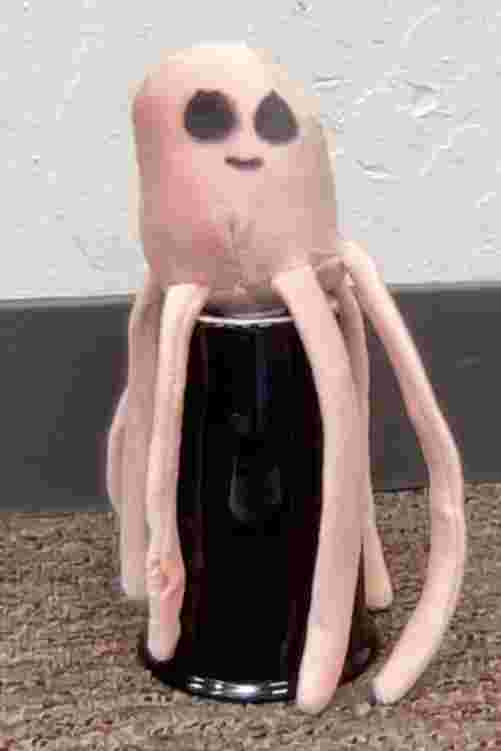
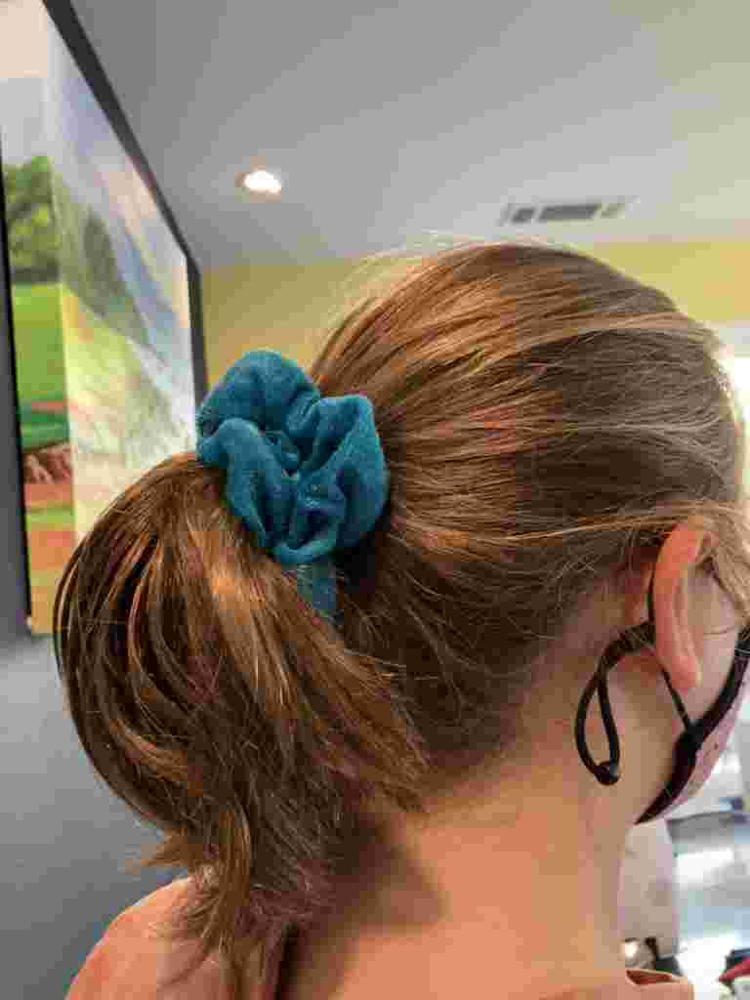
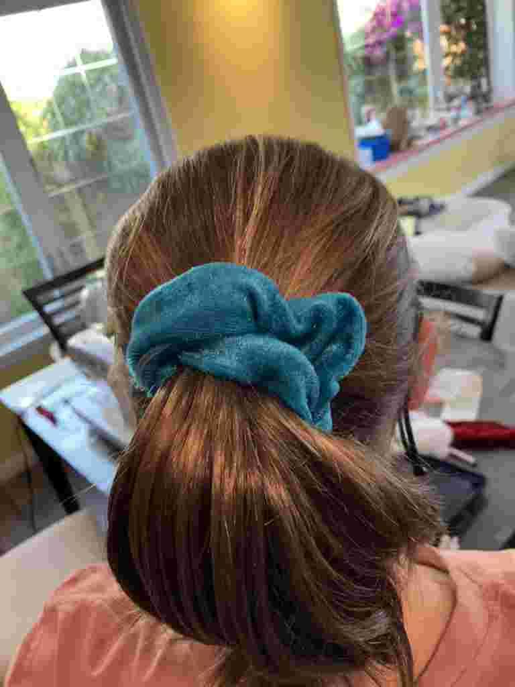
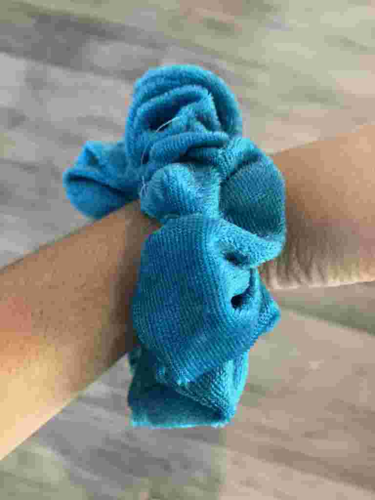

Our process included many mental and physical skills we had to develop from teamwork, to sewing in a straight line. We have processes for our two products, our jellyfish and scrunchies. We found days to work for hours together to working on entre day. Then, after that, spliting up the schedule of what we're supposed to make between all of us. We split who does each product so it's not too overwelming, into Isabel and Rosalind doing jellyfish, and Kayla and Kamya doing scrunchies.
Our first two designs of the jellyfish were very impractical. one was very sharp and had a pointed top. The other one was too skinny and looked more like an octopus. The original eyes were very creepy black dots. The fabric was also stretchy and hard to work with.
Now we have put a lot of time and thought into perfecting our jellyfish. First we cut out two half circles, 1 big circle, and 6 rectangles. You sew the two half circles and sew them around the rounded edge. Then, you take the six rectangeles and fold them in half. You sew them down the open long edge and one of the short edges. Then you flip them and stuff them. Now, you pin the tentacles inside the circle fabric piece and sew the half circles on the edge. Then you flip it insides out and stuff. You sew it closed and then sew two eyes on! Voila.... A jellyfish!
Even though scrunchies sound so easy, it took a lot of mental and physical energy right sides together. We cut out a 20 by 2 rectangle with a little half circle in the middle for the pocket part. After we cut it out we pin it to sew, while we sew we take out the pins. We flip it inside out so the right side is showing. Then we take a safety pin and pin it to a 8 inch elastic to thred it through. We take the saftey pin side, and the oither side of the elastic, and stick it together. Then we close the scrunchie and cut the threds. Lastly we take the two side of velcro, cut 2 inches out of them and cut them in half, hot dog style. peel of the sticky cover and stick it on either side of the pocket. The we sell it to our wonderful costumers.
  